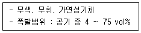
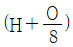
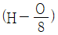
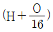
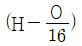
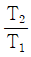
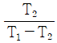
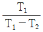
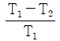
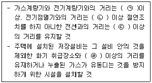

가스산업기사 (2020-08-22 기출문제)
1과목: 연소공학
1. 연소열에 대한 설명으로 틀린 것은?
- 어떤 물질이 완전연소할 때 발생하는 열량이다.
- 연료의 화학적 성분은 연소열에 영향을 미친다.
- 이 값이 클수록 연료로서 효과적이다.
- 발열반응과 함께 흡열반응도 포함한다.
(정답률: 71%)

2. 연소가스량 10m3/kg, 비열 0.325kcal/m3·℃인 어떤 연료의 저위 발열량이 6700kcal/kg 이었다면 이론 연소온도는 약 몇 ℃ 인가?
- 1962℃
- 2062℃
- 2162℃
- 2262℃
(정답률: 64%)
3. 황(S) 1kg이 이산화황(SO2)으로 완전 연소할 경우 이론산소량(kg/kg)과 이론공기량(kg/kg)은 각각 얼마인가?
- 1, 4.31
- 1, 8.62
- 2, 4.31
- 2, 8.62
(정답률: 59%)
4. 메탄 60v%, 에탄 20v%, 프로판 15v%, 부탄 5v%인 혼합가스의 공기 중 폭발 하한계(v%)는 약 얼마인가? (단, 각 성분의 폭발 하한계는 메탄 5.0v%, 에탄 3.0v%, 프로판 2.1v%, 부탄 1.8v% 로 한다.)
- 2.5
- 3.0
- 3.5
- 4.0
(정답률: 67%)
5. 기체연료의 확산연소에 대한 설명으로 틀린 것은?
- 확산연소는 폭발의 경우에 주로 발생하는 형태이며 예혼합연소에 비해 반응대가 좁다.
- 연료가스와 공기를 별개로 공급하여 연소하는 방법이다.
- 연소형태는 연소기기의 위치에 따라 달라지는 비균일 연소이다.
- 일반적으로 확산과정은 화학반응이나 화염의 전파과정보다 늦기 때문에 확산에 의한 혼합속도가 연소속도를 지배한다.
(정답률: 56%)
6. 프로판 가스의 분자량은 얼마인가?
- 17
- 44
- 58
- 64
(정답률: 78%)
7. 0℃, 1기압에서 C3H8 5kg의 체적은 약 몇 m3 인가? (단, 이상기체로 가정하고, C의 원자량은 12, H의 원자량은 1 이다.)
- 0.6
- 1.5
- 2.5
- 3.6
(정답률: 58%)
8. 다음 보기의 성질을 가지고 있는 가스는?

- 메탄
- 암모니아
- 에틸렌
- 수소
(정답률: 79%)
9. 공기비가 적을 경우 나타나는 현상과 가장 거리가 먼 것은?
- 매연발생이 심해진다.
- 폭발사고 위험성이 커진다.
- 연소실 내의 연소온도가 저하된다.
- 미연소로 인한 열손실이 증가한다.
(정답률: 54%)
10. 1atm, 27℃의 밀폐된 용기에 프로판과 산소가 1:5 부피비로 혼합되어 있다. 프로판이 완전 연소하여 화염의 온도가 1000℃가 되었다면 용기 내에 발생하는 압력은 약 몇 atm 인가?
- 1.95 atm
- 2.95 atm
- 3.95 atm
- 4.95 atm
(정답률: 46%)
11. 기체상수 R을 계산한 결과 1.987 이었다. 이 때 사용되는 단위는?
- cal/mol·K
- erg/kmol·K
- Joule/mol·K
- L·atm/mol·K
(정답률: 67%)
12. 분진폭발과 가장 관련이 있는 물질은?
- 소백분
- 에테르
- 탄산가스
- 암모니아
(정답률: 77%)
13. 폭굉이란 가스 중의 음속보다 화염 전파속도가 큰 경우를 말하는데 마하수 약 얼마를 말하는가?
- 1~2
- 3~12
- 12~21
- 21~30
(정답률: 66%)
14. 다음 중 자기연소를 하는 물질로만 나열된 것은?
- 경유, 프로판
- 질화면, 셀룰로이드
- 황산, 나프탈렌
- 석탄, 플라스틱(FRP)
(정답률: 73%)
15. 가연물의 위험성에 대한 설명으로 틀린 것은?
- 비등점이 낮으면 인화의 위험성이 높아진다.
- 파라핀 등 가연성 고체는 화재 시 가연성액체가 되어 화재를 확대한다.
- 물과 혼합되기 쉬운 가연성 액체는 물과 혼합되면 증기압이 높아져 인화점이 낮아진다.
- 전기전도도가 낮은 인화성 액체는 유동이나 여과 시 정전기를 발생하기 쉽다.
(정답률: 60%)
16. 정전기를 제어하는 방법으로서 전하의 생성을 방지하는 방법이 아닌 것은?
- 접속과 접지(Bonding and Grounding)
- 도전성 재료 사용
- 침액파이프(Dip pipes)설치
- 첨가물에 의한 전도도 억제
(정답률: 62%)
17. 어떤 반응물질이 반응을 시작하기 전에 반드시 흡수하여야 하는 에너지의 양을 무엇이라 하는가?
- 점화에너지
- 활성화에너지
- 형성엔탈피
- 연소에너지
(정답률: 77%)
18. 연료의 발열량 계산에서 유효수소를 옳게 나타낸 것은?




(정답률: 67%)
19. 표준상태에서 기체 1m3은 약 몇 몰인가?
- 1
- 2
- 22.4
- 44.6
(정답률: 55%)
20. 다음 중 열전달계수의 단위는?
- kcal/h
- kcal/m2·h·℃
- kcal/m·h·℃
- kcal/℃
(정답률: 64%)
2과목: 가스설비
21. 조정기 감압방식 중 2단 감압방식의 장점이 아닌 것은?
- 공급압력이 안정하다.
- 장치와 조작이 간단하다.
- 배관의 지름이 가늘어도 된다.
- 각 연소기구에 알맞은 압력으로 공급이 가능하다.
(정답률: 57%)
22. 지하 도시가스 매설배관에 Mg과 같은 금속을 배관과 전기적으로 연결하여 방식하는 방법은?
- 희생양극법
- 외부전원법
- 선택배류법
- 강제배류법
(정답률: 72%)
23. 고압가스 설비 내에서 이상상태가 발생한 경우 긴급이송 설비에 의하여 이송되는 가스를 안전하게 연소시킬 수 있는 안전장치는?
- 벤트스택
- 플레어스택
- 인터록기구
- 긴급차단장치
(정답률: 64%)
24. 도시가스시설에서 전기방식효과를 유지하기 위하여 빗물이나 이물질의 접촉으로 인한 절연의 효과가 상쇄되지 아니하도록 절연이음매 등을 사용하여 절연한다. 절연조치를 하는 장소에 해당되지 않는 것은?
- 교량횡단 배관의 양단
- 배관과 철근콘크리트 구조물사이
- 배관과 배관지지물사이
- 타 시설물과 30cm 이상 이격되어 있는 배과
(정답률: 66%)
25. 원심 펌프를 병렬로 연결하는 것은 무엇을 증가시키기 위한 것인가?
- 양정
- 동력
- 유량
- 효율
(정답률: 69%)
26. 저온장치에서 저온을 얻을 수 있는 방법이 아닌 것은?
- 단열교축팽창
- 등엔트로피팽창
- 단열압축
- 기체의 액화
(정답률: 64%)
27. 두께 3mm, 내경 20mm, 강관에 내압이 2kgf/cm2일 때, 원주방향으로 강관에 작용하는 응력은 약 몇 kgf/cm2 인가?
- 3.33
- 6.67
- 9.33
- 12.67
(정답률: 55%)
28. 용적형 압축기에 속하지 않는 것은?
- 왕복 압축기
- 회전 압축기
- 나사 압축기
- 원심 압축기
(정답률: 52%)
29. 비교회전도 175, 회전수 3000rpm, 양정 210m인 3단 원심펌프의 유량은 약 몇 m3/min 인가?
- 1
- 2
- 3
- 4
(정답률: 42%)
30. 고압고무호스의 제품성능 항목이 아닌 것은?
- 내열성능
- 내압성능
- 호스부성능
- 내이탈성능
(정답률: 53%)
31. 이중각시 구형 저장탱크에 대한 설명으로 틀린 것은?
- 상온 또는 –30℃ 전후까지의 저온의 범위에 적합하다.
- 내구에는 저온 강재, 외구에는 보통 강판을 사용한다.
- 액체산소, 액체질소, 액화메탄 등의 저장에 사용된다.
- 단열성이 아주 우수하다.
(정답률: 53%)
32. 저온(T2)으로부터 고온(T1)으로 열을 보내는 냉동기의 성능계수 산정식은?




(정답률: 60%)
33. 액화석유가스를 소규모 소비하는 시설에서 용기수량을 결정하는 조건으로 가장 거리가 먼 것은?
- 용기의 가스 발생능력
- 조정기의 용량
- 용기의 종류
- 최대 가스 소비량
(정답률: 45%)
34. LPG 용기 충전설비의 저장설비실에 설치하는 자연환기설비에서 외기에 면하여 설치된 환기구의 통풍가능면적의 합계는 어떻게 하여야 하는가?
- 바닥면적 1m2마다 100cm2의 비율로 계산한 면적 이상
- 바닥면적 1m2마다 300cm2의 비율로 계산한 면적 이상
- 바닥면적 1m2마다 500cm2의 비율로 계산한 면적 이상
- 바닥면적 1m2마다 600cm2의 비율로 계산한 면적 이상
(정답률: 62%)
35. 정압기를 사용압력 별로 분류한 것이 아닌 것은?
- 단독사용자용 정압기
- 중압 정압기
- 지역 정압기
- 지구 정압기
(정답률: 52%)
36. 액화 사이클 중 비점이 점차 낮은 냉매를 사용하여 저비점의 기체를 액화하는 사이클은?
- 린데 공기 액화사이클
- 가역가스 액화사이클
- 캐스케이드 액화사이클
- 필립스 공기 액화사이클
(정답률: 57%)
37. 추의 무게가 5kg이며, 실린더의 지름이 4cm 일 때 작용하는 게이지 압력은 약 몇 kg/cm2 인가?
- 0.3
- 0.4
- 0.5
- 0.6
(정답률: 51%)
38. 시안화수소를 용기에 충전하는 경우 품질검사시 합격 최저 순도는?
- 98%
- 98.5%
- 99%
- 99.5%
(정답률: 66%)
39. 용적형(왕복식) 펌프에 해당하지 않는 것은?
- 플런저 펌프
- 다이어프램 펌프
- 피스톤 펌프
- 제트 펌프
(정답률: 67%)
40. 조정기의 주된 설치 목적은?
- 가스의 유속조절
- 가스의 발열량조절
- 가스의 유량조절
- 가스의 압력조절
(정답률: 57%)
3과목: 가스안전관리
41. 고압가스 저장탱크를 지하에 묻는 경우 지면으로부터 저장탱크의 정상부까지의 깊이는 최소 얼마 이상으로 하여야 하는가?
- 20cm
- 40cm
- 60cm
- 1m
(정답률: 67%)
42. 동일 차량에 적재하여 운반이 가능한 것은?
- 염소와 수소
- 염소와 아세틸렌
- 염소와 암모니아
- 암모니아와 LPG
(정답률: 60%)
43. 고압가스 제조 시 압축하면 안 되는 경우는?
- 가연성가스(아세틸렌, 에틸렌 및 수소를 제외) 중 산소용량이 전용량의 2% 일 때
- 산소 중의 가연성가스(아세틸렌, 에틸렌 및 수소를 제외)의 용량이 전용량의 2% 일 때
- 아세틸렌, 에틸렌 또는 수소 중의 산소용량이 전용량의 3% 일 때
- 산소 중 아세틸렌, 에틸렌 및 수소의 용량 합계가 전용량의 1% 일 때
(정답률: 64%)
44. 액화석유가스의 특성에 대한 설명으로 옳지 않은 것은?
- 액체는 물보다 가볍고, 기체는 공기보다 무겁다.
- 액체의 온도에 의한 부피변화가 작다.
- LNG보다 발열량이 크다.
- 연소 시 다량의 공기가 필요하다.
(정답률: 58%)
45. 자기압력기록계로 최고사용압력이 중압인 도시가스배관에 기밀시험을 하고자 한다. 배관의 용적이 15m3일 때 기밀 유지시간은 몇 분 이상이어야 하는가?
- 24분
- 36분
- 240분
- 360분
(정답률: 54%)
46. 차량에 고정된 탱크 운행 시 반드시 휴대하지 않아도 되는 서류는?
- 고압가스 이동계획서
- 탱크 내압시험 성적서
- 차량등록증
- 탱크용량 환산표
(정답률: 59%)
47. 이동식 부탄연소기와 관련된 사고가 액화석유가스 사고의 약 10% 수준으로 발생하고 있다. 이를 예방하기 위한 방법으로 가장 부적당한 것은?
- 연소기에 접합용기를 정확히 장착한 후 사용한다.
- 과대한 조리기구를 사용하지 않는다.
- 잔가스 사용을 위해 용기를 가열하지 않는다.
- 사용한 접합용기는 파손되지 않도록 조치한 후 버린다.
(정답률: 72%)
48. 액화석유가스 사용시설의 시설기준에 대한 안전사항으로 다음 ( ) 안에 들어갈 수치가 모두 바르게 나열된 것은?

- (㉠) 60cm, (㉡) 30cm, (㉢) 15cm, (㉣) 8m
- (㉠) 30cm, (㉡) 20cm, (㉢) 15cm, (㉣) 8m
- (㉠) 60cm, (㉡) 30cm, (㉢) 15cm, (㉣) 2m
- (㉠) 30cm, (㉡) 20cm, (㉢) 15cm, (㉣) 2m
(정답률: 64%)
49. 독성가스 용기 운반 등의 기준으로 옳은 것은?
- 밸브가 돌출한 운반용기는 이동식 프로텍터 또는 보호구를 설치한다.
- 충전용기를 차에 실을 때에는 넘어짐 등르로 인한 충격을 고려할 필요가 없다.
- 기준 이상의 고압가스를 차량에 적자해여 운반할 경우 운반책임자가 동승하여야 한다.
- 시·도지사가 지정한 장소에서 이륜차에 적재할 수 있는 충전용기는 충전량이 50kg 이하고 적재 수는 2개 이하이다.
(정답률: 63%)
50. 독성가스이면서 조연성가스인 것은?
- 암모니아
- 시안화수소
- 황화수소
- 염소
(정답률: 60%)
51. 다음 각 용기의 기밀시험 압력으로 옳은 것은?
- 초저온가스용 용기는 최고 충전압력의 1.1배의 압력
- 초저온가스용 용기는 최고 충전압력의 1.5배의 압력
- 아세틸렌용 용기는 최고 충전압력의 1.1배의 압력
- 아세틸렌용 용기는 최고 충전압력의 1.6배의 압력
(정답률: 50%)
52. LPG용 가스렌지 사용하는 도중 불꽃이 치솟는 사고가 발생하였을 때 가장 직접적인 사고 원인은?
- 압력조정기 불량
- T관으로 가스누출
- 연소기의 연소불량
- 가스누출자동차단기 미작동
(정답률: 66%)
53. 고압가스용 이음매 없는 용기에서 내용적 50L인 용기에 4MPa의 수압을 걸었더니 내용적이 50.8L가 되었고 압력을 제거하여 대기압으로 하였더니 내용적이 50.02L가 되었다면 이 용기의 영구증가율은 몇 % 이며, 이 용기는 사용이 가능한지를 판단하면?
- 1.6%, 가능
- 1.6%, 불능
- 2.5%, 가능
- 2.5%, 불능
(정답률: 64%)
54. 산소와 함께 사용하는 액화석유가스 사용시설에서 압력조정기와 토치사이에 설치하는 안전장치는?
- 역화방지기
- 안전밸브
- 파열판
- 조정기
(정답률: 63%)
55. 아세틸렌을 2.5MPa의 압력으로 압축할대 첨가하는 희석제가 아닌 것은?
- 질소
- 에틸렌
- 메탄
- 황화수소
(정답률: 55%)
56. LPG 충전기의 충전호스의 길이는 몇 m 이내로 하여야 하는가?
- 2m
- 3m
- 5m
- 8m
(정답률: 66%)
57. 염소 누출에 대비하여 보유하여야 하는 제독제가 아닌 것은?
- 가성소다 수용액
- 탄산소다 수용액
- 암모니아 수용액
- 소석회
(정답률: 70%)
58. 가스설비가 오조작되거나 정상적인 제조를 할 수 없는 경우 자동적으로 원재료를 차단하는 장치는?
- 인터록기구
- 원료제어밸브
- 가스누출기구
- 내부반응 감시기구
(정답률: 71%)
59. 도시가스 사업법에서 정한 가스 사용시설에 해당되지 않는 것은?
- 내관
- 본관
- 연소기
- 공동주택 외벽에 설치된 가스계량기
(정답률: 53%)
60. 도시가스 사용시설에서 입상관은 환기가 양호한 장소에 설치하며 입상관의 밸브는 바닥으로부터 몇 m 이내에 설치하는가?
- 1m 이상 ~ 1.3m 이내
- 1.3m 이상 ~ 1.5m 이내
- 1.5m 이상 ~ 1.8m 이내
- 1.6m 이상 ~ 2m 이내
(정답률: 52%)
4과목: 가스계측
61. 다음 중 기본단위가 아닌 것은?
- 길이
- 광도
- 물질량
- 압력
(정답률: 51%)
62. 기체크로마토그래피를 이용하여 가스를 검출할 때 반드시 필요하지 않는 것은?
- Column
- Gas Sampler
- Carrier gas
- UV detector
(정답률: 70%)
63. 적분동작이 좋은 결과를 얻기 위한 조건이 아닌 것은?
- 불감시간이 적을 때
- 전달지연이 적을 때
- 측정지연이 적을 때
- 제어대상의 속응도(速應度)가 적을 때
(정답률: 66%)
64. 보상도선의 색깔이 갈색이며 매우 낮은 온도를 측정하기에 적당한 열전대 온도계는?
- PR 열전대
- IC 열전대
- CC 열전대
- CA 열전대
(정답률: 60%)
65. 측정기의 감도에 대한 일반적인 설명으로 옳은 것은?
- 감도가 좋으면 측정시간이 짧아진다.
- 감도가 좋으면 측정범위가 넓어진다.
- 감도가 좋으면 아주 작은 양의 변화를 측정할 수 있다.
- 측정량의 변화를 지시량의 변화로 나누어 준 값이다.
(정답률: 63%)
66. 가스누출 확인 시험지와 검지가스가 옳게 연결된 것은?
- KI 전분지 - CO
- 연당지 - 할로겐가스
- 염화파라듐지 - HCN
- 리트머스시험지 – 알칼리성가스
(정답률: 59%)
67. 시료 가스를 각각 특정한 흡수액에 흡수시켜 흡수 전후의 가스체적을 측정하여 가스의 성분을 분석하는 방법이 아닌 것은?
- 적정(寂定)법
- 게겔(Gockel)법
- 헴펠(Hempel)법
- 오르자트(Orsat)법
(정답률: 67%)
68. 가연성가스누출검지기에는 반도체 재료가 널리 사용되고 있다. 이 반도체 재료로 가장 적당한 것은?
- 산화니켈(NiO)
- 산화주석(SnO2)
- 이산화망간(MnO2)
- 산화알루미늄(Al2O3)
(정답률: 58%)
69. 접촉식 온도계 중 알코올 온도계의 특징에 대한 설명으로 옳은 것은?
- 열전도율이 좋다.
- 열팽창계수가 적다.
- 저온측정에 적합하다.
- 액주의 복원시간이 짧다.
(정답률: 62%)
70. 계량이 정확하고 사용 중 기차의 변동이 거의 없는 특징의 가스미터는?
- 벤투리미터
- 오리피스미터
- 습식가스미터
- 로터리피스톤식미터
(정답률: 71%)
71. 전기저항식 습도계의 특징에 대한 설명으로 틀린 것은?
- 자동제어에 이용된다.
- 연속기록 및 원격측정이 용이하다.
- 습도에 의한 전기저항의 변화가 적다.
- 저온도의 측정이 가능하고, 응답이 빠르다.
(정답률: 58%)
72. FID 검출기를 사용하는 기체크로마토그래피는 검출기의 온도가 100℃ 이상에서 작동되어야 한다. 주된 이유로 옳은 것은?
- 가스소비량을 적게하기 위하여
- 가스의 폭발을 방지하기 위하여
- 100℃ 이하에서는 점화가 불가능하기 때문에
- 연소 시 발생하는 수분의 응축을 방지하기 위하여
(정답률: 67%)
73. 가스시험지법 중 염화제일구리 착염지로 검지하는 가스 및 반응색으로 옳은 것은?
- 아세틸렌 - 적색
- 아세틸렌 - 흑색
- 할로겐화물 - 적색
- 할로겐화물 – 청색
(정답률: 65%)
74. 탄성식 압력계에 속하지 않는 것은?
- 박막식 압력계
- U자관형 압력계
- 부르동관식 압력계
- 벨로우즈식 압력계
(정답률: 52%)
75. 도시가스 사용압력이 2.0kPa 인 배관에 설치된 막식가스미터의 기밀시험 압력은?
- 2.0 kPa 이상
- 4.4 kPa 이상
- 6.4 kPa 이상
- 8.4 kPa 이상
(정답률: 58%)
76. 가스계량기의 검정 유효기간은 몇 년인가? (단, 최대유량 10m3/h 이하이다.)
- 1년
- 2년
- 3년
- 5년
(정답률: 59%)
77. 습한 공기 200kg 중에 수증기가 25kg 포함되어 있을 때의 절대습도는?
- 0.106
- 0.125
- 0.143
- 0.171
(정답률: 44%)
78. 계측기의 원리에 대한 설명으로 가장 거리가 먼 것은?
- 기전력의 차이로 온도를 측정한다.
- 액주높이로부터 압력을 측정한다.
- 초음파속도 변화로 유량을 측정한다.
- 정전용량을 이용하여 유속을 측정한다.
(정답률: 57%)
79. 전기 저항식 온도계에 대한 설명으로 틀린 것은?
- 열전대 온도계에 비하여 높은 온도를 측정하는데 적합하다.
- 저항선의 재료는 온도에 의한 전기저항의 변화(저항 온도계수)가 커야 한다.
- 저항 금속재료는 주로 백금, 니켈, 구리가 사용된다.
- 일반적으로 금속은 온도가 상승하면 전기 저항값이 올라가는 원리를 이용한 것이다.
(정답률: 54%)
80. 평균유속이 5m/s인 배관 내에 물의 질량유속이 15kg/s 이 되기 위해서는 관의 지름을 약 몇 mm로 해야 하는가?
- 42
- 52
- 62
- 72
(정답률: 42%)